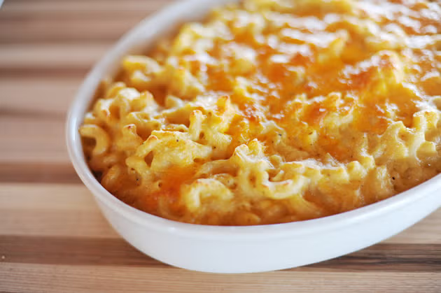

Macaroni and Cheese

Description
This macaroni and cheese, when done right, is a masterpiece. It has a rich
taste and baking it gives a great texture. The best part is, the cheese
used can be different every time the recipe is made. The right mixture can
bring out sharp, smokey, or extra buttery flavors.
Ingredients
- 4 c. dried macaroni
- 1 egg
- 1/4 c. salted butter
- 1/4 c. all-purpose flour
- 2 1/2 c. whole milk
- 2 heaping tsp. dry mustard
- 1 lb. grated cheese
- ~1/4 lb. extra grated cheese for topping
- 1/2 tsp. kosher salt
- 1/2 tsp. seasoned salt
- 1/2 tsp. ground black pepper
- (optional) cayenne, paprika, and/or thyme
Steps
- Preheat oven to 350°F.
- Cook macaroni until very firm (will finish cooking in oven).
-
Melt butter in a large pot and sprinkle in flour, whisking constantly
over medium-low heat for 5 minutes.
-
Pour in milk and add dry mustard, whisking the sauce smooth and cook for
5 minutes.
-
Beat egg in a small bowl, and temper them by adding & whisking ~1/4 c.
of the sauce in the bowl.
- Pour egg mixture into sauce and whisk smooth.
- Add in cheese and seasonings, stiring until melted.
-
Add the macaroni into the pot and stir to combine, then pour into a
buttered baking dish.
-
Top the dish with the extra cheese, then bake in the oven for 20-25
minutes.
- Let the dish cool for ~3 minutes before serving.